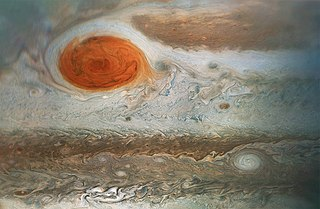
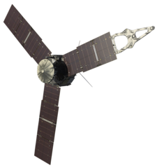

Jupiter, seen by NASA's Hubble Space Telescope
Jupiter is the largest planet in the Solar System and fifth from the Sun.
It is one of two gas giants, composed of hydrogen and helium, with trace amounts of methane, ammonia, ethane and water.
It is named after the king of gods and god of the sky in Roman mythology, analogous to Zeus in greek mythology.
The most recognisable feature is the massive Great Red Spot - a long-lasting storm in the atmosphere of Jupiter.
It has a faint ring and at least 97 moons.
The four main ones are Ganymede, Callisto, Io, and Europa, first discoverd by Galileo in 1610.
Multiple spacecrafts have visited Jupiter, two of which have orbited around it.
Pioneer 10 and 11, Voyager 1 and 2 and New Horizons used Jupiter's gravity for accelerating beyond it's orbits to achieve the velocity required to leave the Solar System.
Juno is an ongoing mission, studying the atmosphere, deep structure and magnetosphere.
ESA's JUICE and NASA's Europa Clipper are on their way to Jupiter and its satellites Ganymede, Callisto and Europa.
A future mission is CNSA's Tianwen-4, which is planned to launch in 2035.
Jupiter is named after the Roman god Jupiter.
In Greek, the planet is named after Zeus (Δίας), the greek equivalent of Jupiter.
It's original name in ancient Greece was Phaeton (Φαέθων, "shining one").
In Chinese, Japanese and neighboring countries the planet is refered to as "wood star" (木星).
In Vedic astrology, the planet is named after Brihaspati (बृहस्पति), the "guru of devas" or teacher of gods.

Timelapse of Jupiter over a month
Orbit and rotation
Jupiter orbits 5.2 AU away from the Sun, 4.95 AU during perihelion and 5.46 AU during aphelion.
It takes 11.86 Earth years to complete an orbit.
The orbital plane of Jupiter is inclined 1.30° compared to the ecliptic and has an eccentricity of 0.049.
Jupiter's axial tilt is only 3.13°.
Jupiter rotates the fastest of all the planets, completing a rotation in ten hours on average.
This makes the planet more flattened than other planets at 6.8% flattening, with only Saturn having a higher percent.
Just like other giants, Jupiter observes a differential rotation.
The Jovian poles rotate slower, rotating 5 minutes longer than the equator.
Size and mass
Jupiter is the largest planet in the Solar System.
It has a diameter 11.2 times that of Earth and one tenth of the Sun.
Exoplanets that are gas giants, are similar to Jupiter and are therefore called "Jupiters".
A "hot Jupiter" is a class of gas giant exoplanets that orbit close to their host star, examples include Dimidium (51 Pegassi b), WASP-12b, HD 209458 b and WASP-19b.
Jupiter is composed of hydrogen and helium, with trace amounts of ammonia, methane and water.
In the atmosphere, helium makes up 10% of the volume, but a quarter of the mass.
Deep inside the planet, the mantle is composed of metallic hydrogen, which contributes to the strong magnetosphere of Jupiter.
Data collected by the Juno spacecraft suggests that Jupiter has a large and partially dissolved core.

The Great Red Spot, image captured by Juno
Jupiter has a very dynamic atmosphere full of storms, clouds and differently colored bands.
The clouds at the top layers are possibly crystalline ammonia, the middle layer is likely made of ammonium hydrosulfide crystals and the innermost layer may be made of water ice and vapor.
The colorful stripes on Jupiter are quickly spinning streams of clouds.
Different, but exactly unknown compounds give the storms the red, white and yellow colors.
Storms on Jupiter are long lasting vortices.
The most well-known is the Great Red Spot, a persistent anticyclonic storm located 22° south of the equator.
The storm has existed for at least 191 years.
Since it's discovery, the storm has shrunk in size.
Other storms include a series of "pearls" - massive counterclockwise rotating storms that appear as white ovals in the southern hemisphere.
Since 1986, the ovals have varied in number from six to nine.
Jupiter has a faint planetary ring system composed of three main segments: an inner "halo", a relatively bright main ring and outer faint rings.
These rings appear to be made of dust, similar to the rings of Neptune.
The main ring is created by the satellites Metis and Adrastea, while the outer ones are shaped by Amalthea and Thebe.
Main article: Satellites of Jupiter
Jupiter has four gravitationally rounded moons - Ganymede, Callisto, Io and Europa.
They were discovered by Galileo Galilei in 1610 and are called Galilean moons.
Ganymede is the largest known satellite and is bigger than Mercury.
All but Europa are larger than Earth's Moon.
Io, Europa and Ganymede are in a 4:2:1 orbital resonance with each other.
93 other moons are known to orbit Jupiter.
Just like the four Galilean moons, the rest are assigned names of lovers of Zeus (Greek equivalent of Jupiter) and later their descendants.
They are significantly smaller than the Galilean moons.
The biggest of them is Amalthea, and the most massive is Himalia.

Ganymede
Main article: Ganymede
Ganymede is the largest known satellite in the Solar System.
It is larger than the planet Mercury, but is less massive.
The Hubble Space Telescope has discovered evidence for underground saltwater ocean.
It has a magnetic field, the only satellite known to have such.
The magnetic field is likely affected by the interior ocean.
The ongoing ESA mission JUICE is planned to orbit Ganymede and study the satellite.

Callisto
Main article: Callisto
Callisto is the second biggest of the Galilean moons.
The surface is heavily cratered, covered with craters and white icy spots.
The Galileo spacecraft has gathered data from Callisto that shows the possibility of an interior ocean.

Io
Main article: Io
Io is a satellite of Jupiter that is slightly larger than Earth's Moon.
It is volcanically active and has hundreds of volcanoes.
The activity of Io is caused by the gravitational pull of Jupiter on one side and Ganymede and Europa on the other side.
Together these three satellites are in a orbital resonance with each other.
Volcano eruptions can be so powerful that Earth telescopes can see them.

Europa
Main article: Europa
Europa is the smallest Galilean moon and is slightly smaller than Earth's Moon.
It is an icy moon with a smooth surface full of dark streaks.
It is speculated that Europa could have a subsurface ocean where extraterrestrial life could exist.
This is similar to Ganymede and Callisto, but there are more evidences showing such ocean on Europa than on the other two moons.
A similar satellite is Saturn's moon Enceladus.
The orbiter Europa Clipper by NASA that was launched in 2024 is planned to study the Europan surface.
There are four satellites that orbit closer to Jupiter than Io - Metis, Adrastea, Amalthea, and Thebe.
They have regular orbits, that are prograde and have a low eccentricity and inclination, just like the Galilean moons.
Metis and Adrastea maintain Jupiter's main ring, whereas Amalthea and Thebe maintain their own faint outer rings.
Main article: Trojans
A large group of asteroids co-orbits with Jupiter, named trojans.
These asteroids are divided in two groups - the Greek camp, lying around the leading Lagrange point (L4), and the Trojan camp, lying around the trailing Lagrange point (L5).
The Greek camp includes 7508 known trojans, the biggest of which are 624 Hektor, 911 Agamemnon and 588 Achilles.
On the other hand, the Trojan camp has 4044 known asteroids, the biggest of which are 617 Patroclus-Menoetius, 3451 Mentor and 3317 Paris.
Other planets, with the exception of Mercury and Saturn, also have their own co-orbiting asteroids.
They are also named trojans after the Jovian trojans.
These planets have considerably less trojans than Jupiter.
Earth has two known trojans - 2010 TK7 and 2020 XL5.
Another group of asteroids, that are influenced by Jupiter's gravity well are the Hilda asteroids, named after the asteroid 153 Hilda.
They are located outside the asteroid belt and within Jupiter's orbit.
Their aphelion reaches any of three Lagrange point (L5, L4 and L3) in a sequence.
Jupiter is known since ancient times.
It is the second brightest planet in the night sky after Venus.
In 1610, Galileo Galilei discovered the four biggest moons of Jupiter - the Galilean moons.
Names were given by the astronomer Simon Marius - Io, Europa, Ganymede and Callisto.
Giovanni Cassini was the first to observe the atmosphere of Jupiter, discovering the bands and storms that form.
In 1892, the american astronomer E. E. Barnard discovered a fifth moon - Amalthea.
Eight other moons were discovered before the launch of the Voyager 1 spacecraft.

Model of NASA's spacecraft Juno
Multiple spacecrafts have visited Jupiter, two of which have orbited around it.
The missions that were aimed at reaching the outer Solar System used Jupiter's gravity for accelerating beyond it's orbits, achieving the needed velocity to leave the Solar System.
First to reach Jupiter was Pioneer 10, followed by Pioneer 11 one year later.
The two spacecrafts made the first close-up images of Jupiter.
Voyager 1 and 2 discovered Jupiter's rings, observed the Galilean moons and found a few moons.
Ulysses, a solar probe, performed a flyby around Jupiter to attain a polar orbit around the Sun.
The Cassini-Huygens passed Jupiter on it's way to the Saturn system.
The last to fly by Jupiter was New Horizons, a mission aimed at visiting Pluto.
Galileo was the first Jupiter orbiter.
It studied the system and it's moons for seven years, until it's intentional destruction.
An atmospheric probe was released into Jupiter to determine the atmospheric composition.
It also witnessed the impact of the comet Shoemaker-Levy 9 with Jupiter.
Juno is the follow-up mission of Galileo.
It is the second New Frontiers mission after New Horizons.
It's target was gathering further information about Jupiter.
The mission is currently extended and will end in 2025, meeting the same fate as Galileo.
The Jupiter Icy Moons Explorer, a program developed by the ESA, launched in 2023.
It will perform several flybys around Jupiter and the moons Europa, Ganymede and Callisto.
The last objective is to enter orbit around the biggest moon Ganymede.
NASA launched the Europa Clipper the next year.
The objective is to study Europa, mainly because of it's potential life suspected to inhabit an internal ocean.
CNSA is preparing for launching Tianwen-4 in 2035 with the mission to study the Jovian magnetosphere and atmosphere, as well as Ganymede or Callisto.
External links
{% include catplanets.html %}